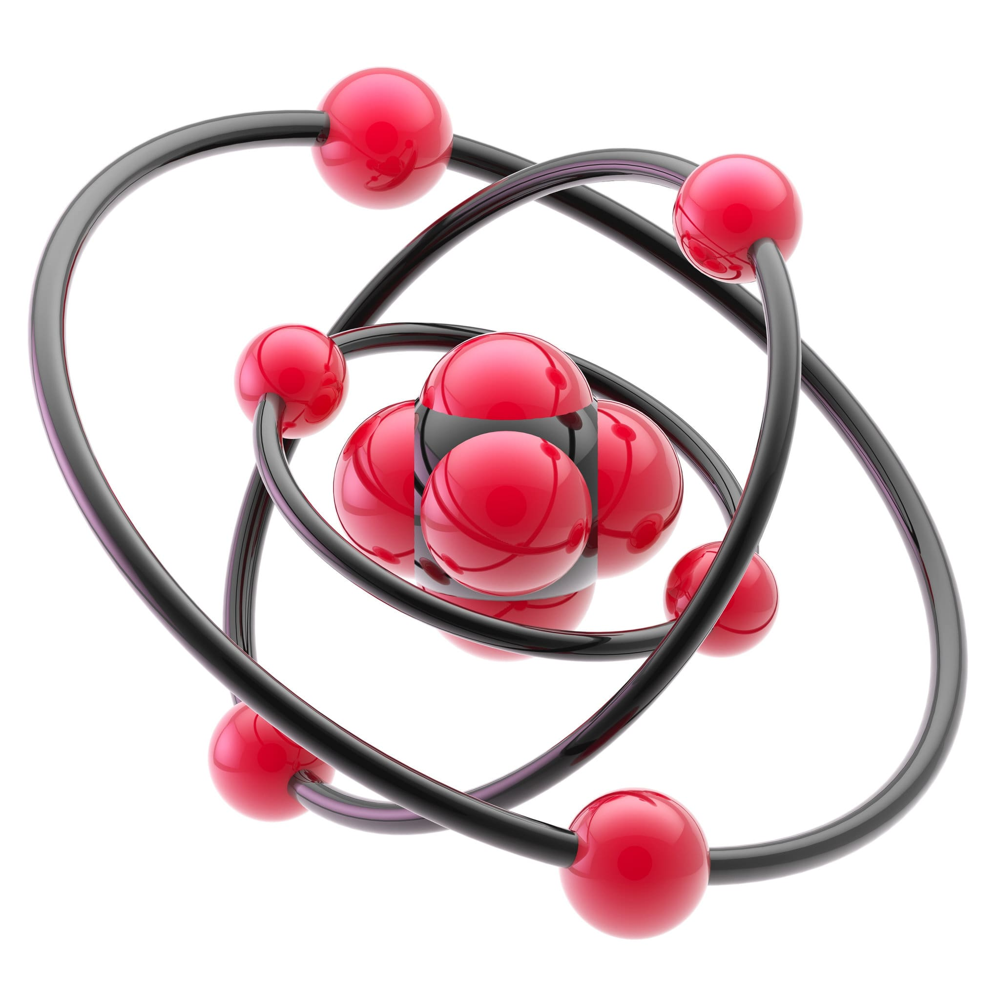
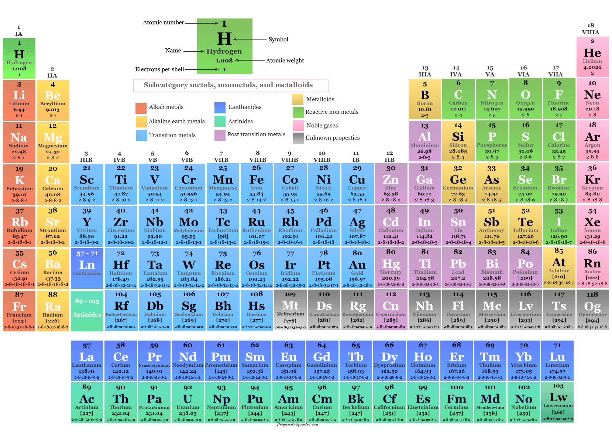
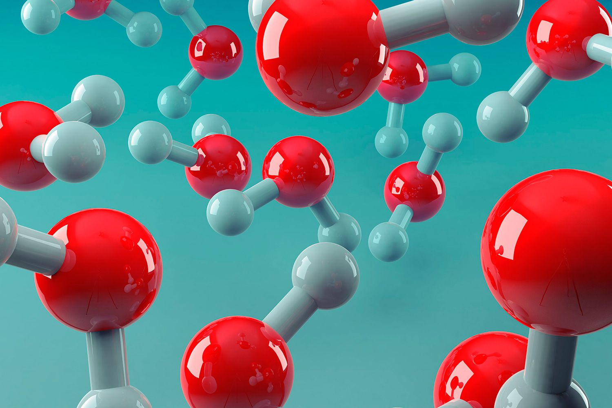
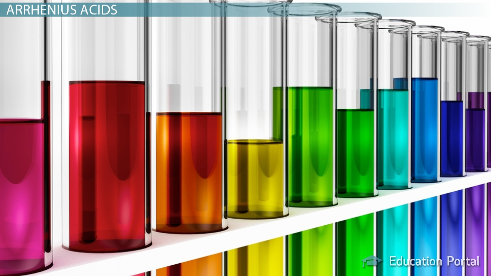
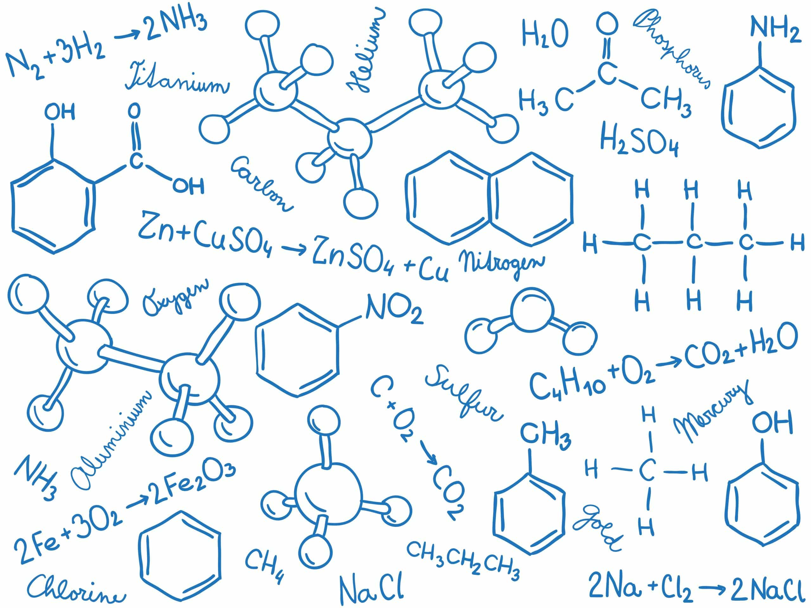
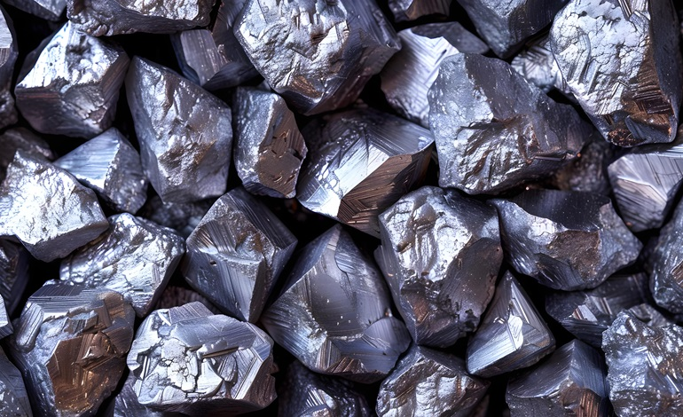

States of Matter; Methods of Separating and Purifying Substances

Atomic Structure

The Periodic Table

Ionic Bonding; Covalent Bonding; Types of Substance

Acids

Calculations Involving Masses

Electrolytic Processes; Obtaining and Using Metals; Reversible Reactions and Equilibria